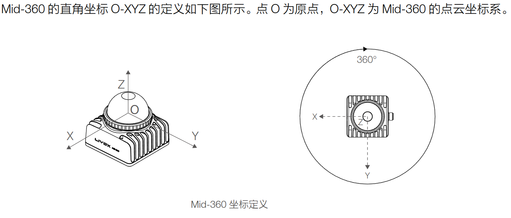
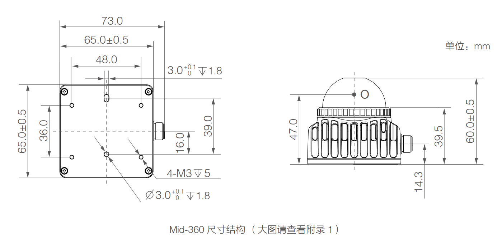
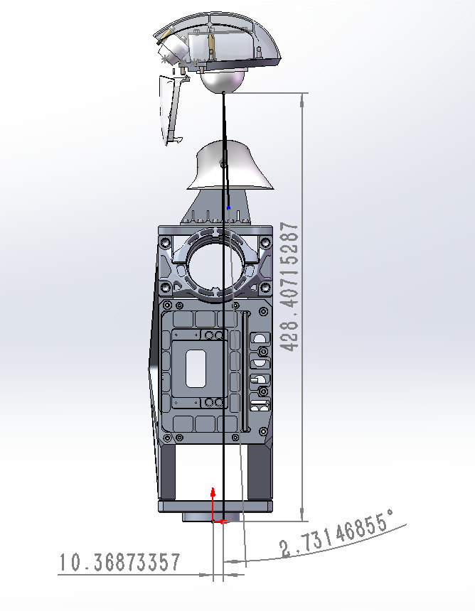
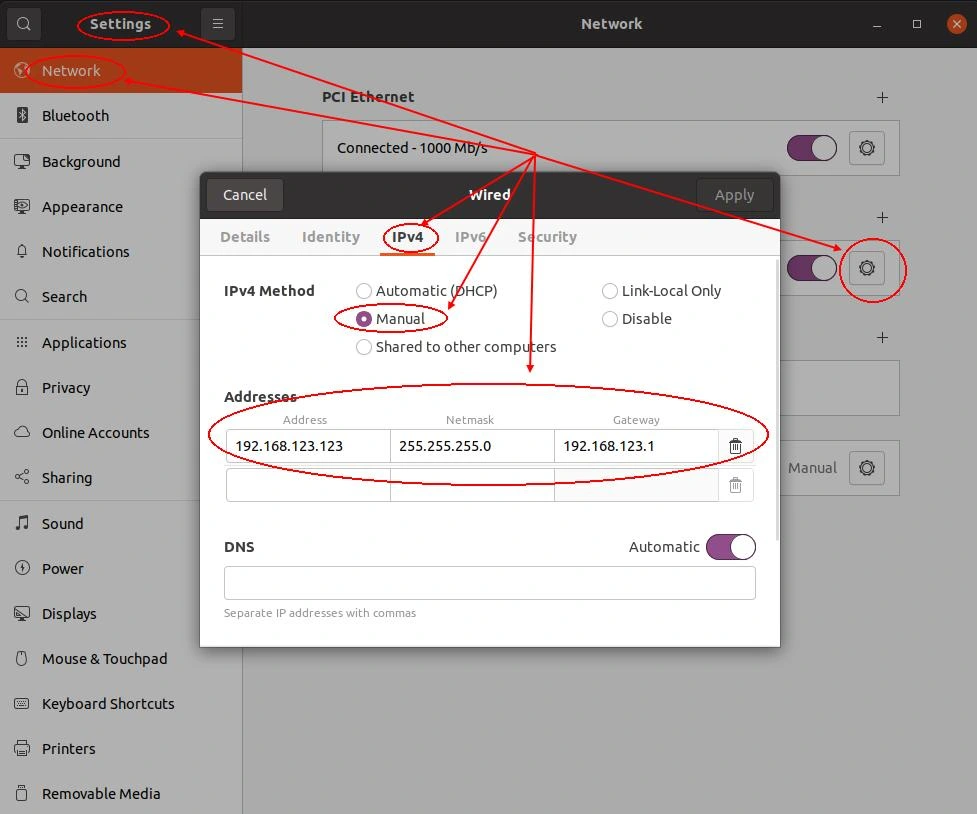
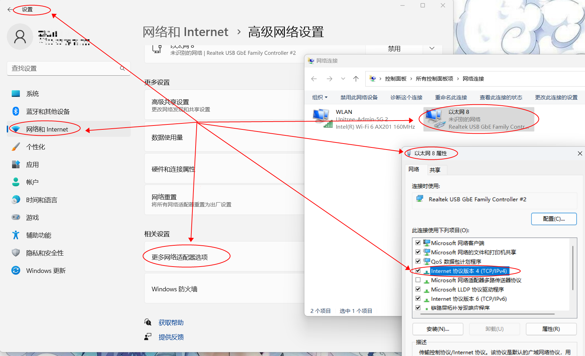
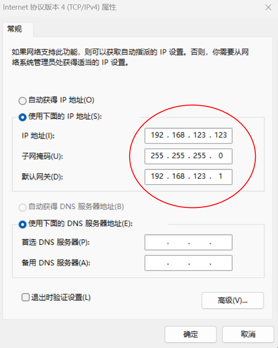
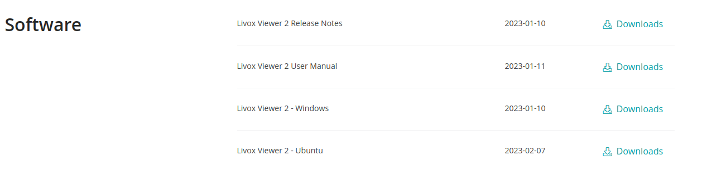
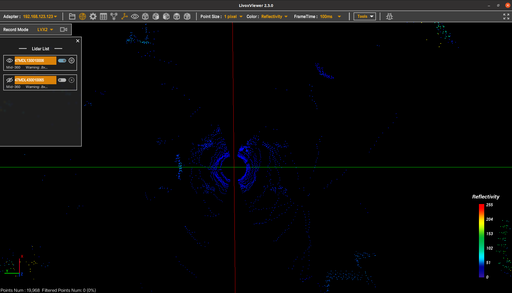
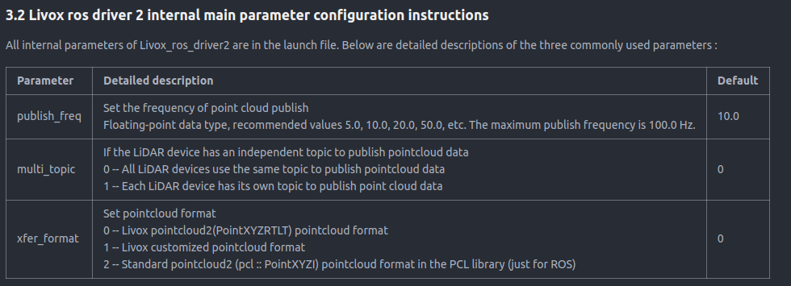
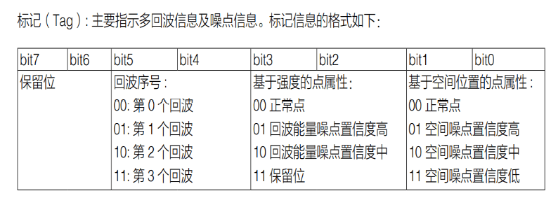

激光雷达例程
一、G1机器人雷达介绍与官方资料获取
G1 机器人雷达位于头部位置，雷达型号为 livox Mid-360。
Livox Mid-360 是一款高性价比、安全可靠的激光探测测距仪传感器，可广泛应用于物流机器人、工业机器人、智慧城市等领域，支持建图、定位、识别、避障等功能的实现。
雷达详情页：https://www.livoxtech.com/mid-360 雷达资料页：https://www.livoxtech.com/mid-360/downloads 雷达官方 github 地址：https://github.com/Livox-SDK
雷达坐标系、雷达坐标系与机器人中心坐标系关系：



二、雷达数据获取
2.1 通信连接
雷达随机器人出厂的 ip 地址设置为 192.168.123.120。
将电脑与机器人通过网线连接，设置电脑 ip address 在 192.168.123 网段下、netmsak 为 255.255.255.0、gateway 为 192.168.123.1，可以通过 ping 192.168.123.120 查看是否与雷达 ip 有效连接。
若为 ubuntu 系统，设置连接网口的 ip 配置参考：

若为windows系统，设置连接网口的ip配置参考：


2.2 Livox Viewer 2上位机获取数据
livox提供上位机可以直接查看雷达数据、配置雷达参数。 相关资料下载地址：https://www.livoxtech.com/mid-360/downloads

若硬件连接正常，打开 Livox Viewer 2 上位机可以看到：

上位机详细使用方法，参考《Livox Viewer 2 User Manual》。
注意
直接在PC2（Jetson Orin Nx）Ubuntu系统上运行LivoxViewer2.sh会报错Exec format error, 建议您使用自己PC连接G1肩部网口配置雷达IP及相关参数。
2.3 通过 Livox-SDK2 获取数据
Livox SDK2 是一个软件开发工具包，专为 HAP 和 Mid-360 等所有 Livox 激光雷达设计。它基于 C/C++ 开发，遵循 Livox SDK2 通信协议，并提供易于使用的 C 风格 API。借助 Livox SDK2，用户可以快速连接到 Livox 激光雷达并接收点云数据。
Livox-SDK2 代码仓库地址：https://github.com/Livox-SDK/Livox-SDK2
编译安装步骤：
git clone https://github.com/Livox-SDK/Livox-SDK2.git
cd ./Livox-SDK2/
mkdir build
cd build
cmake .. && make -j
sudo make install
卸载/删除步骤：
sudo rm -rf /usr/local/lib/liblivox_lidar_sdk_*
sudo rm -rf /usr/local/include/livox_lidar_*
代码例程参考 .../Livox-SDK2/samples 文件夹下的代码示例，注意修改mid360_config.json 文件里 "lidar_ip" 为 192.168.123.120、"host_ip" 为主机 ip。
2.4 通过 livox_ros_driver2 获取数据
Livox ROS Driver 2 是用于连接 Livox 产品的 LiDAR 产品的第二代驱动程序包，适用于ROS（推荐使用 noetic）和 ROS2（推荐使用 foxy 或 humble）。
livox_ros_driver2 代码仓库地址：https://github.com/Livox-SDK/livox_ros_driver2 编译、使用参照代码的 readme 文件说明。
针对 G1 机器人雷达，需要修改.../livox_ros_driver2/config/MID360_config.json 文件内的 "lidar_configs" "ip" 为 "192.168.123.120"、"host_net_info" 下的 ip 为主机 ip。
参考配置文件内容：
{
"lidar_summary_info" : {
"lidar_type": 8
},
"MID360": {
"lidar_net_info" : {
"cmd_data_port": 56100,
"push_msg_port": 56200,
"point_data_port": 56300,
"imu_data_port": 56400,
"log_data_port": 56500
},
"host_net_info" : {
"cmd_data_ip" : "192.168.123.123",
"cmd_data_port": 56101,
"push_msg_ip": "192.168.123.123",
"push_msg_port": 56201,
"point_data_ip": "192.168.123.123",
"point_data_port": 56301,
"imu_data_ip" : "192.168.123.123",
"imu_data_port": 56401,
"log_data_ip" : "",
"log_data_port": 56501
}
},
"lidar_configs" : [
{
"ip" : "192.168.123.120",
"pcl_data_type" : 1,
"pattern_mode" : 0,
"extrinsic_parameter" : {
"roll": 0.0,
"pitch": 0.0,
"yaw": 0.0,
"x": 0,
"y": 0,
"z": 0
}
}
]
}
在 launch 文件内修改user_config_path 参数为配置文件 MID360_config.json 的路径。
以 .../livox_ros_driver2/launch_ROS1文件内容为例子，参考其内容为：
<launch>
<!--user configure parameters for ros start-->
<arg name="lvx_file_path" default="livox_test.lvx"/>
<arg name="bd_list" default="100000000000000"/>
<arg name="xfer_format" default="1"/>
<arg name="multi_topic" default="0"/>
<arg name="data_src" default="0"/>
<arg name="publish_freq" default="10.0"/>
<arg name="output_type" default="0"/>
<arg name="rviz_enable" default="false"/>
<arg name="rosbag_enable" default="false"/>
<arg name="cmdline_arg" default="$(arg bd_list)"/>
<arg name="msg_frame_id" default="livox_frame"/>
<arg name="lidar_bag" default="false"/>
<arg name="imu_bag" default="false"/>
<!--user configure parameters for ros end-->
<param name="xfer_format" value="$(arg xfer_format)"/>
<param name="multi_topic" value="$(arg multi_topic)"/>
<param name="data_src" value="$(arg data_src)"/>
<param name="publish_freq" type="double" value="$(arg publish_freq)"/>
<param name="output_data_type" value="$(arg output_type)"/>
<param name="cmdline_str" type="string" value="$(arg bd_list)"/>
<param name="cmdline_file_path" type="string" value="$(arg lvx_file_path)"/>
<param name="user_config_path" type="string" value="$(find livox_ros_driver2)/config/MID360_config.json"/>
<param name="frame_id" type="string" value="$(arg msg_frame_id)"/>
<param name="enable_lidar_bag" type="bool" value="$(arg lidar_bag)"/>
<param name="enable_imu_bag" type="bool" value="$(arg imu_bag)"/>
<node name="livox_lidar_publisher2" pkg="livox_ros_driver2"
type="livox_ros_driver2_node" required="true"
output="screen" args="$(arg cmdline_arg)"/>
<group if="$(arg rosbag_enable)">
<node pkg="rosbag" type="record" name="record" output="screen"
args="-a"/>
</group>
</launch>
若硬件连接正常，在roslaunch livox_ros_driver2 msg_MID360.launch 后即可订阅到 /livox/lidar、/livox/imu 话题。
需额外注意的是，/livox/lidar 话题的格式受 launch 文件的 xfer_format 参数控制，参考代码的 readme 文件说明：

三、噪点处理
参考：https://www.livoxtech.com/showcase/livox-tag
从激光雷达底层信息出发，Livox 在雷达输出的点云数据中内置标识点云多回波及噪点信息数据的 Tag 信息，帮助用户更高效地应对点云噪声。

参考代码：
// Only when all the lower four digits are 0 can it be used
if(_Lidar_1_pcl.points[i].tag > 0 && _Lidar_1_pcl.points[i].tag < 16){
// std::cout << "tag: " << static_cast<int>(_Lidar_1_pcl.points[i].tag) << std::endl;
// std::vector<bool> bit_values(8);
// // Extract each bit and store it as a Boolean value
// for (int k = 0; k < 8; ++k) {
// bit_values[k] = (_Lidar_1_pcl.points[i].tag >> k) & 0x01;
// }
// // Output the Boolean value of each bit
// for (int k = 0; k < 8; ++k) {
// std::cout << "Bit " << k << ": " << static_cast<bool>(bit_values[k]) << std::endl;
// }
continue;
}